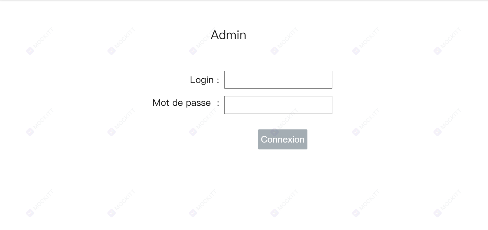
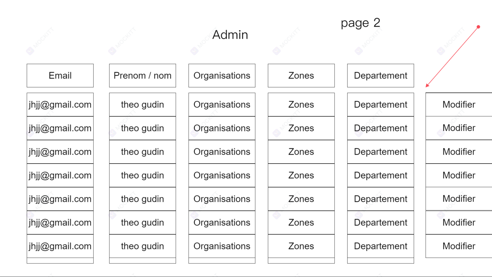
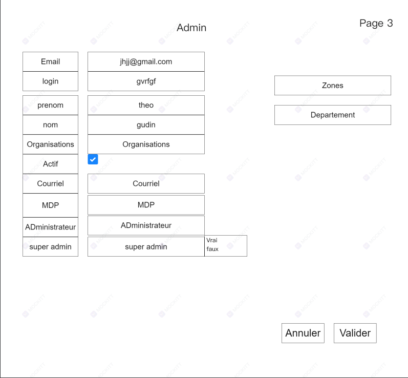
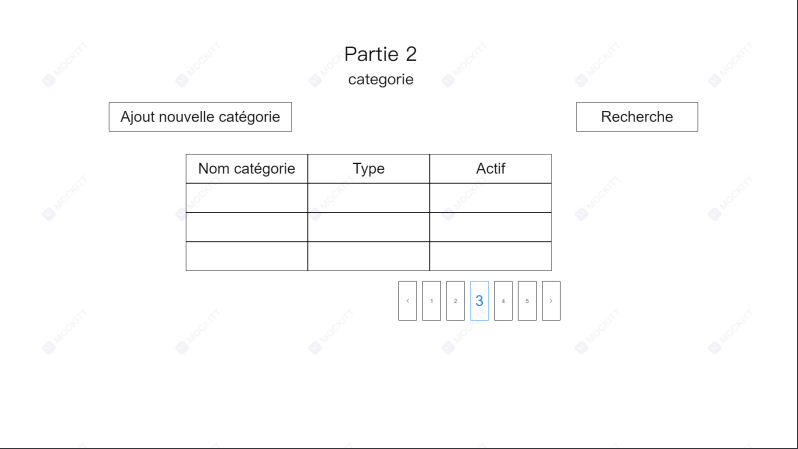
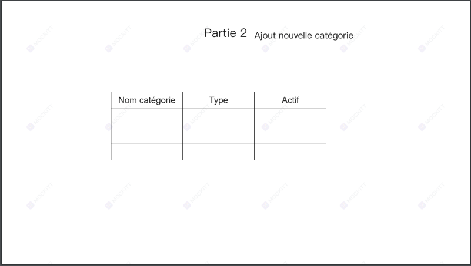
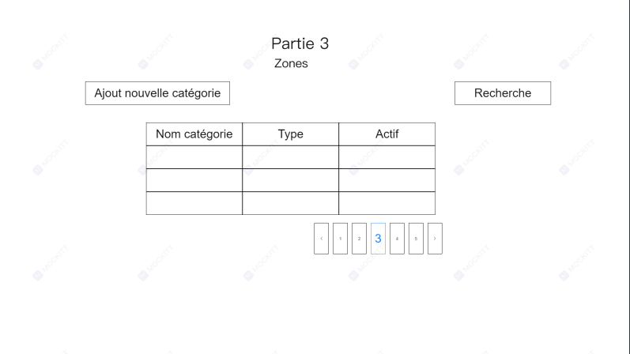
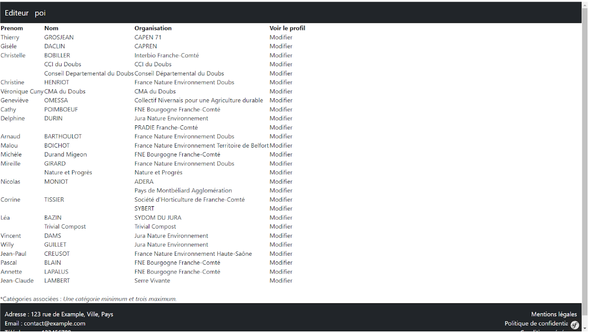
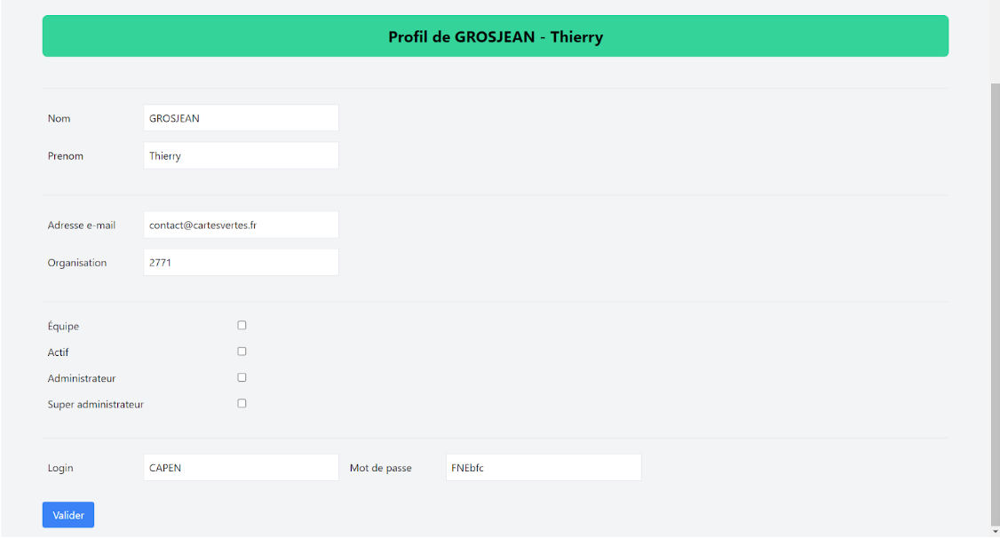

Lors de ce stage, j'ai du récupérer le code qui avait été fait sous symfony 3 et éffectué une migration vers symfony 7. Le code avait été sauvegarder dans une machine virtuel avec des dockers.
L'application a été développé avec symfony 3 qui n'est plus d'actualité désormais car nous utilisons symfony 7. J'ai donc d'abord commencé à comprendre tous les éléments de symfony 3 (comme silex qui n'est plus utile sur symfony 7), twig pour les templates, doctrine, pour comprendre comment fonctionne symfony. Notre plus gros problème est la gestion du pare-feu qui bloque tous les téléchargement, l'installation de symfony etc. Ensuite j'ai mise en place de la base de donnée et configuration d'un tunnel SSH pour voir les dockers et le contenu sauvegardé du projet cartes vertes qui est le projet sur lequel je dois faire la migrations vers symfony 7. Le code que nous allons réutiliser et modifier est sauvegardée dans la base de donnée, dans des conteneurs (docker) ce qui permet de sécuriser le codes en cas de problème de l'application. J'ai donc compris comment fonctionnait un conteneur et comment le code et réparti dans les différent conteneur ce qui m'a permit d'effectué une migrations plus faciles car je savais a quoi correspondait les elément de symfony 3 dans le 7. J'ai en amont, créé un petite page pour comprendre comment afficher des données, comment modifier,agencer une page en symfony.
Une fois lancé j'ai donc appris a faire des routes pour lier les différentes pages de l'application entre elle, j'ai ensuite fait des formulaires avec les informations de la base de données. Et pour finir n'ayant pas le temps de tous faire, j'ai fait une documentation pour permettre a chef de l'association de continuer le projet pour un futur développeur venant en stage.
Voici a quoi ressemble la page d'acceuil à l'installation de symfony
Première expériences du code et création de cette page simple avec un lien entre les pages
editeur et Import/export.
Apprentissage des requete DQL (doctrine query language) qui est le language spécifique pour crée
des requete sql dans symfony.
Voici comment nous avons imaginer l'application lors du développement de l'application
     Sur cette image, nous voyons l'amelioration de l'image numéro 1

Création du formulaire ou le super-admin peut gérer le rôle de chaque.
La zone en noir est un dump de mon objet Editeur
Amélioration du formulaire de la photo ci dessus pour avoir un rendu plus propre et plus professionnelle.
